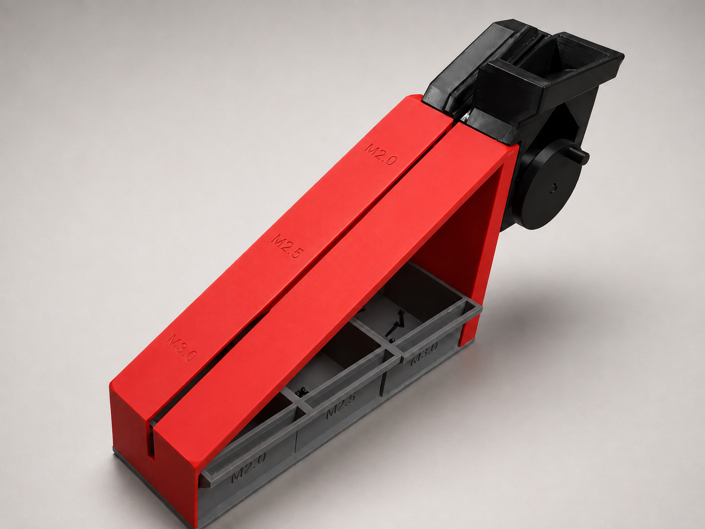
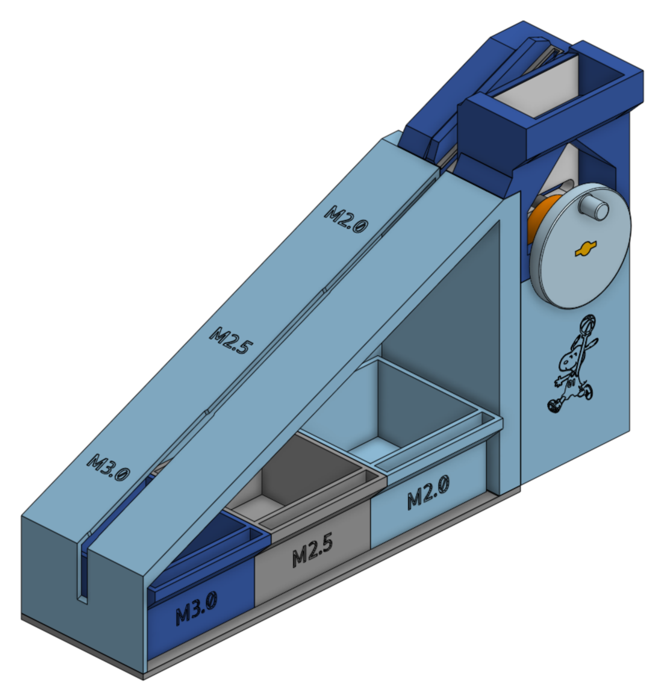
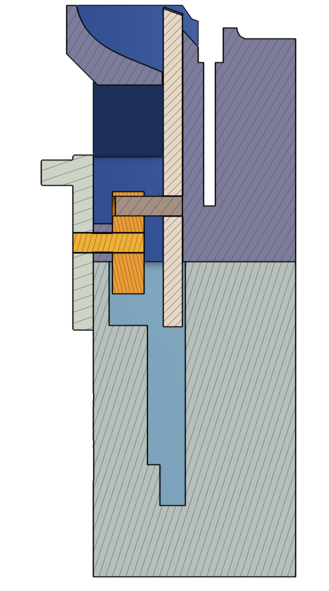
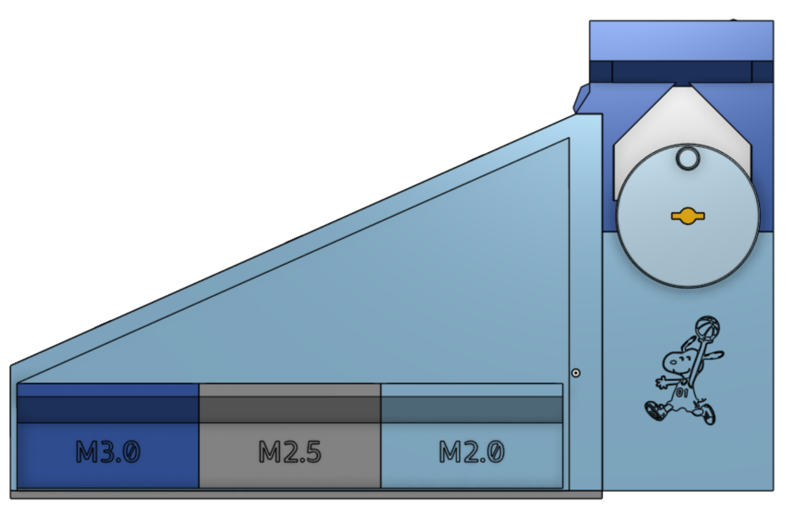
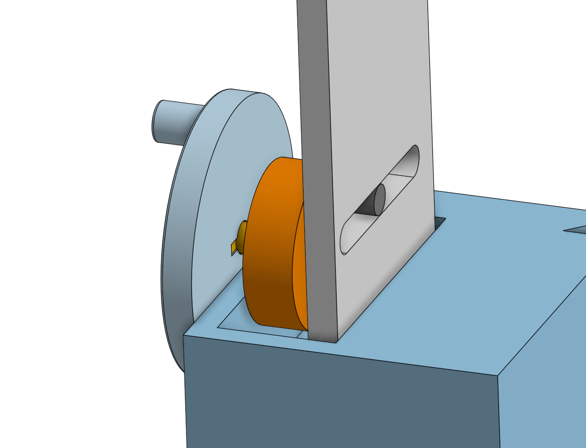
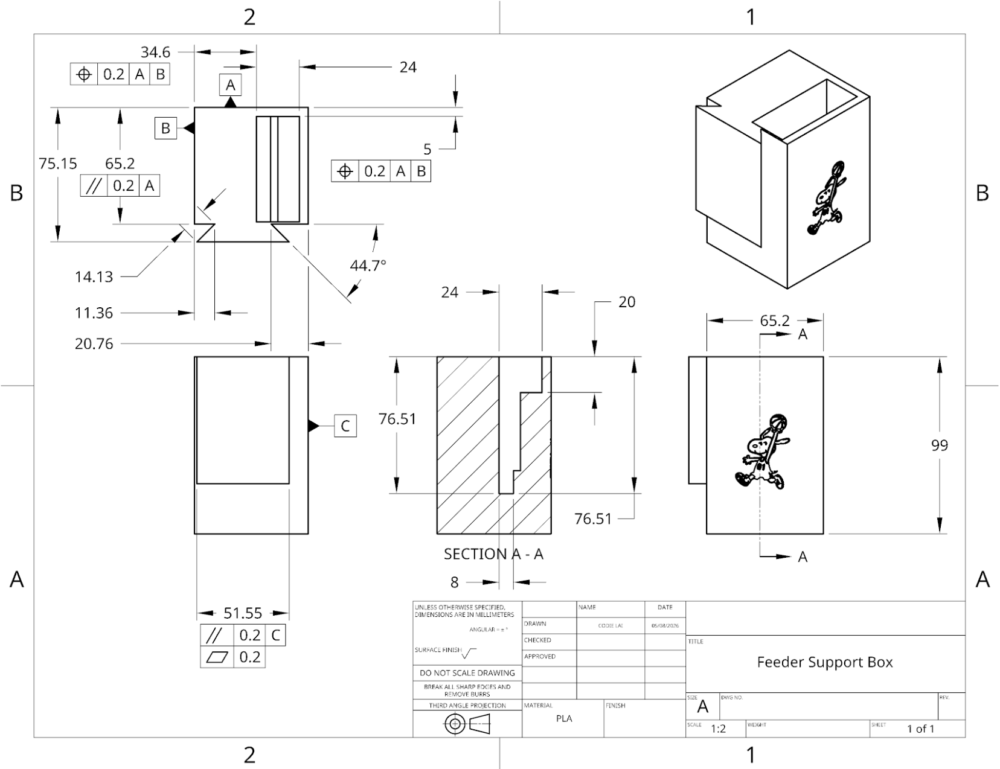
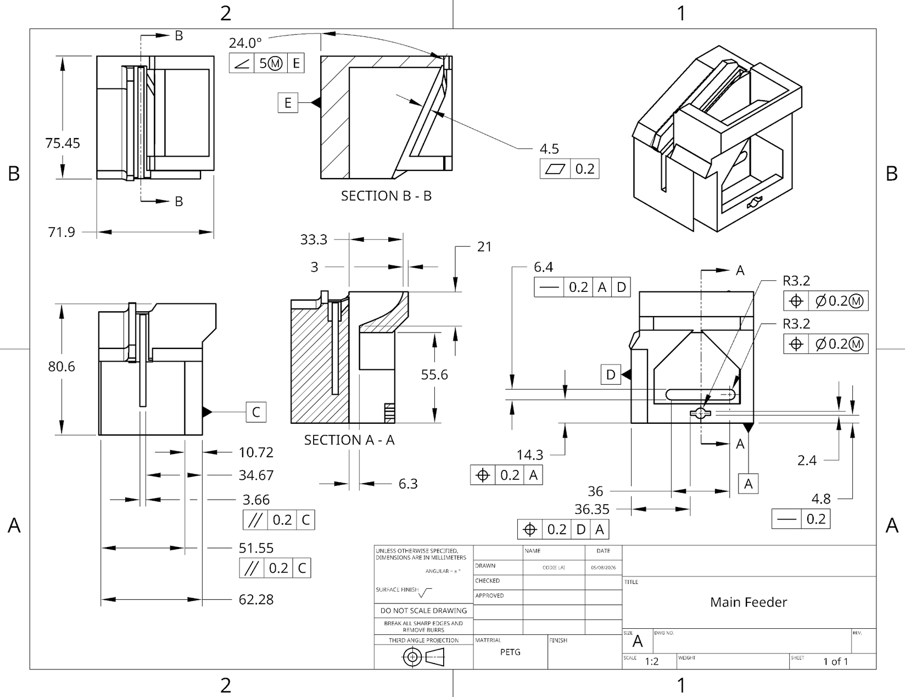

Mechanism Design & GD&T
This mechanism sorts bolts by head size using gravity and a gap-based channel, without any electronics or sensors — bolts simply fall through until the gap gets too narrow for them to pass.

The sorting channel starts narrow and widens further along its length based on head size, so smaller bolts (M2.0) drop through early while larger ones (M2.5, M3.0, and beyond) travel further before falling into their slot. The labeled sizes shown are the current range, but the channel geometry is parametric in CAD, so it can be resized to sort a different range of bolts without redesigning the mechanism from scratch.
This was a team project, and my role was designing the feed mechanism — a hand crank at the top that converts rotary motion into linear motion, feeding bolts into the channel at a controlled rate of about 1 to 3 bolts per rotation. I also produced the GD&T drawings for the assembly. Most of the design iteration happened here, tuning the crank geometry and feed rate until bolts moved through consistently without jamming.






Every part was 3D printed and assembled using clearance and press fits.